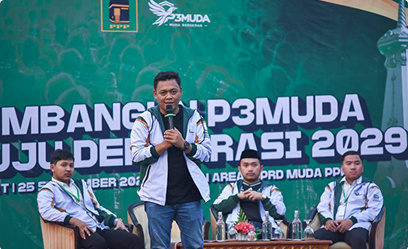
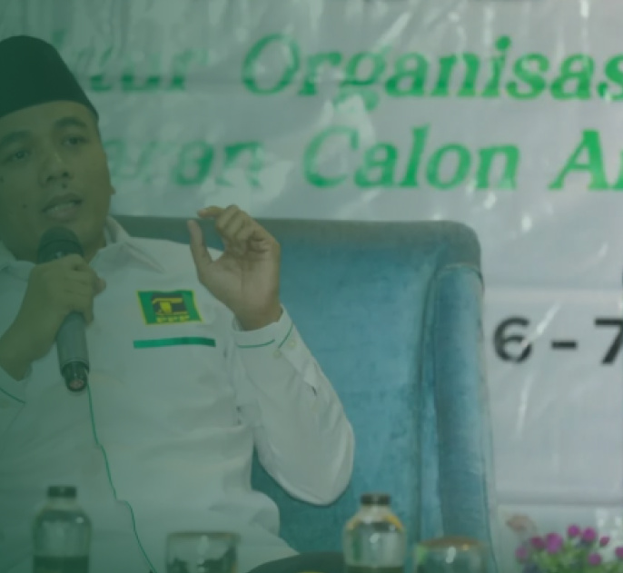
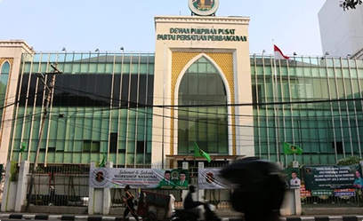
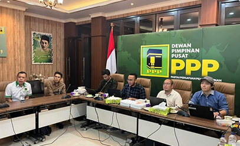

P3Muda · Foto: SINDOnews
POLITIK & KEBANGSAAN · 06 NOVEMBER 2026
Referensi mockup: SINDOnews
P3Muda Tegas Menjaga NKRI, Dukung Langkah Konstitusional Presiden
P3Muda dukung langkah konstitusional Presiden.
Baca selengkapnyaBerakar pada Nilai, Bergerak untuk Rakyat.

IDENTITAS TETAP, NARASI DIPERLUAS
Berakar pada Nilai, Bergerak untuk Rakyat.
Ruang informasi dan dialog publik yang menghadirkan gagasan, aspirasi masyarakat, serta berbagai inisiatif untuk masa depan bersama.
Arsip PPP · Identitas Partai
KABAR PPP
Ikuti perkembangan informasi Partai Persatuan Pembangunan melalui contoh pemberitaan dalam web ini.

P3Muda · Foto: SINDOnews
POLITIK & KEBANGSAAN · 06 NOVEMBER 2026
Referensi mockup: SINDOnews
P3Muda dukung langkah konstitusional Presiden.
Baca selengkapnya
Kantor DPP PPP, Jakarta · Foto: SINDOnews
ORGANISASI & POLITIK · 29 OKTOBER 2026
Referensi mockup: SINDOnews
Konsolidasi internal PPP jelang Pemilu 2029.
Baca selengkapnya
Pelatihan IT PPP · Foto: SINDOnews
TRANSFORMASI DIGITAL · 29 OKTOBER 2026
Referensi mockup: SINDOnews
Pelatihan daring bagi admin IT dari 38 DPW.
Baca selengkapnyaPROGRAM & AKSI
Temukan rancangan program pendidikan, pemberdayaan masyarakat, lingkungan, dan kesejahteraan sosial.

LINGKUNGAN · SOSIAL DAN KEMANUSIAAN
Merawat lingkungan dan memperkuat kepedulian sosial melalui pembelajaran warga, kebun komunitas, dan kesiapsiagaan bersama.
Jelajahi program
PENDIDIKAN
Usulan dukungan belajar yang memadukan bantuan pendidikan, pendampingan, dan akses informasi bagi pemuda.
Jelajahi programSATU RUANG, BERAGAM KEBUTUHAN
JARING ASPIRASI RAKYAT
Setiap aspirasi menjadi bagian penting dalam membangun komunikasi yang terbuka. Sampaikan gagasan, kritik, dan masukan melalui ruang partisipasi akademik ini.
Diterima → Diproses → Ditindaklanjuti
PERNYATAAN RESMI
Temukan contoh pernyataan dan klarifikasi mengenai berbagai isu yang berkaitan dengan organisasi dalam web ini.
Lihat semua informasi9 November 2026 · Seruan Persatuan
Pernyataan mengenai imbauan menjaga keutuhan organisasi dan menyelesaikan persoalan internal melalui dialog dan musyawarah.
Lihat pernyataan2 November 2026 · Klarifikasi Kepengurusan
Pernyataan mengenai penataan kepengurusan dan restrukturisasi untuk meningkatkan efektivitas kerja organisasi.
Lihat pernyataan